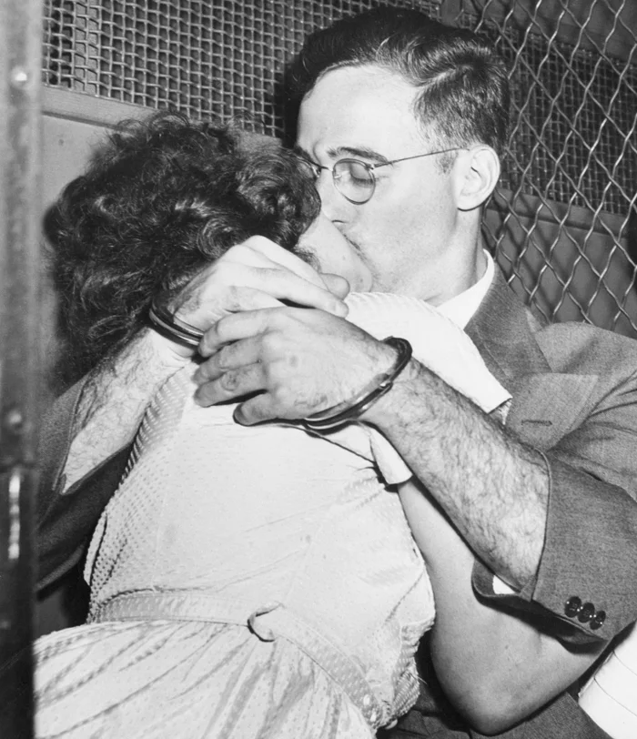
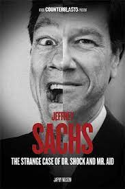
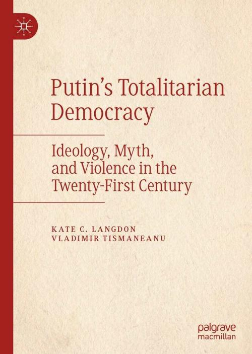

The Rosenberg couple, Julius and Ethel, were convicted for passing atomic secrets to the Soviet Union and were electrocuted in 1953.


The Rosenberg couple, Julius and Ethel, were convicted for passing atomic secrets to the Soviet Union and were electrocuted in 1953.

Klaus Fuchs was a German-born physicist who was convicted, in 1950, for giving atomic-bomb secrets to the Soviet Union
Jeffrey Sachs acted as a key economic advisor with his "Shock Therapy" during USSR's transition from communism to capitalism in the 1990s.

"Putinism" is a mixture of often contradictory ideologies and tenets that include: imperialism, revanchism, Eurasianism, ethnocentrism, Slavophilism, Messianism, millenarianism, nationalism, militarism, tsarism, conservatism, authoritarianism, chauvinism, Bolshevism, anti-Westernism, and more.

The Haitian president Jovenel Moïse was assassinated in 2021. Some speculate that the CIA under Joe Biden was behind it.